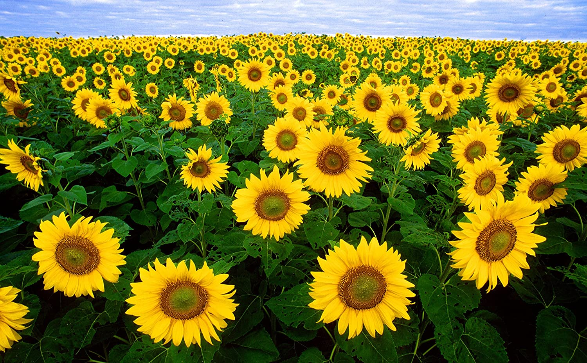

Sunflower (Helianthus annuus L.) is one of the few crop species that originated in North America (most originated in the fertile crescent, Asia or South or Central America). It was probably a "camp follower" of several of the western native American tribes who domesticated the crop (possibly 1000 BC) and then carried it eastward and southward of North America. The first Europeans observed sunflower cultivated in many places from southern Canada to Mexico. Sunflowers grow best in locations with direct sunlight (6 to 8 hours per day); they require long, hot summers to flower well. Choose a location with well-draining soil. It shouldn't pool water after it rains. Sunflowers aren't picky but the soil can't be too compact. These flowers are unique in that they have the ability to provide energy in the form of nourishment and vibrancy—attributes which mirror the sun and the energy provided by its heat and light. Sunflowers are known for being “happy” flowers, making them the perfect gift to bring joy to someone's (or your) day.
Sunflower was probably first introduced to Europe through Spain, and spread through Europe as a curiosity until it reached Russia where it was readily adapted. Selection for high oil in Russia began in 1860 and was largely responsible for increasing oil content from 28% to almost 50%. The high-oil lines from Russia were reintroduced into the U.S. after World War II, which rekindled interest in the crop. However, it was the discovery of the male-sterile and restorer gene system that made hybrids feasible and increased commercial interest in the crop. Production of sunflowers subsequently rose dramatically in the Great Plains states as marketers found new niches for the seeds as an oil crop, a birdseed crop, and as a human snack food. Production in these regions in the 1980s has declined mostly because of low prices, but also due to disease, insect and bird problems. Sunflower acreage is now moving westward into dryer regions; however, 85% of the North American sunflower seed is still produced in North and South Dakota and Minnesota.